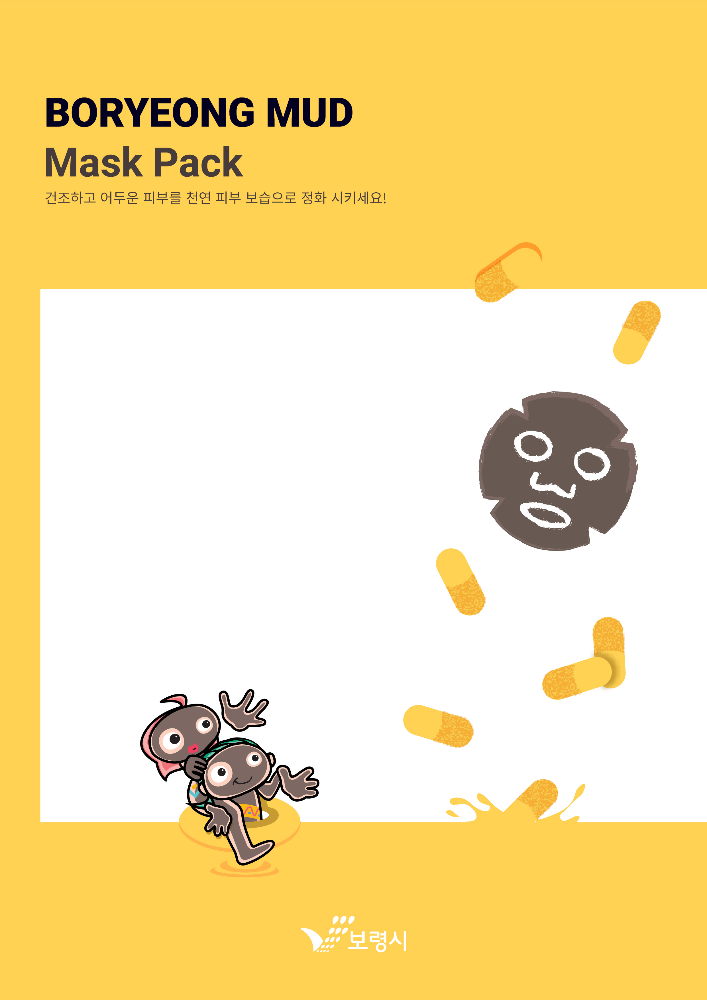

"종속형 시트 또는 캐스케이딩 스타일 시트"는 마크업 언어가 실제 표시되는 방법을 기술하는 언어로[1], HTML과 XHTML에 주로 쓰이며, XML에서도 사용할 수 있다. W3C의 표준이며, 레이아웃과 스타일을 정의할 때의 자유도가 높다.
하지만 아무리 있어서 이제는 더 이상 할 말도, 탈 말도 없기 때문에 내용을 채우기 위해서는 뭐라도 써야한다. 아무래도 전에 놓친 망나뇽이 그리도 아깝다고 한다.
coding
